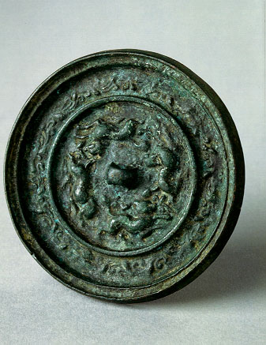

義助慰安婦 —— 李敖百件珍藏義賣藝術品（第32件） 品 名：C1. 漢鏡 預估價：10 萬 成交價：15 萬 說 明： 這是一面漢朝的銅鏡。古人不會用玻璃做鏡子，所以用銅。通常一面磨得很亮當鏡子，另一面則作些裝飾，如刻上花紋或圖形等。古人對鏡子的描述很多，陸游就曾對鏡子有過這樣的描述：「粉棉磨鏡不忍照，女子盛時無十年。」李敖在大陸時的小學同學章□和先生（北京中央交響樂團首席雙簧管）到台灣演出時，送了這面漢鏡給四十多年不見的老同學。 
這是一面漢朝的銅鏡。古人不會用玻璃做鏡子，所以用銅。通常一面磨得很亮當鏡子，另一面則作些裝飾，如刻上花紋或圖形等。古人對鏡子的描述很多，陸游就曾對鏡子有過這樣的描述：「粉棉磨鏡不忍照，女子盛時無十年。」李敖在大陸時的小學同學章□和先生（北京中央交響樂團首席雙簧管）到台灣演出時，送了這面漢鏡給四十多年不見的老同學。